快速开始
My3dtiles是啥？
My3dtiles是一个 3dtiles浏览器，可以直接查看本地3dtiles文件 ！同时也是一个 数字孪生快速搭建工具 、可以配置桌面程序直接用于 大屏展示 ，也可以 发布成web页面，在浏览器上打开！ 当前开发3DGIS网页的常规的方式是写代码，通过vue+cesium搭建网页。这里提供了一种新的方式： 使用My3dtiles编辑器配置好三维场景，然后直接发布网页！ 他的优势是所见即所得！并且提供大量已有功能组件，拿来即用！

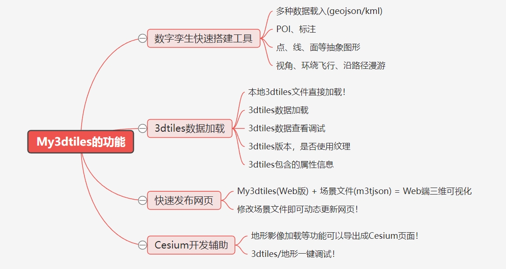
先入为主
快速加载本地3dtiles数据！
- 直接拖拽tileset.json文件到my3dtiles桌面图标上
大文件已外迁网盘：演示视频 20240521-095154-拖拽加载本地3dtiles2.mp4 体积超过 3MB，未随文档入库，请到百度网盘「My3dtiles资料附件」条目取回。
- 直接拖拽文件到已经打开的程序中
大文件已外迁网盘：演示视频 20240521-095409-拖拽加载本地3dtiles.mp4 体积超过 3MB，未随文档入库，请到百度网盘「My3dtiles资料附件」条目取回。
数据加载后双击节点可飞入
大文件已外迁网盘：演示视频 20240521-095542-双击节点飞入.mp4 体积超过 3MB，未随文档入库，请到百度网盘「My3dtiles资料附件」条目取回。
命令面板
可以点击工具栏的第三个按钮，或者使用快捷键 Ctrl + ~ 来唤醒命令面板。如下图所示：
大文件已外迁网盘：演示视频 20240521-094645-命令面板演示.mp4 体积超过 3MB，未随文档入库，请到百度网盘「My3dtiles资料附件」条目取回。
m3t基础功能
数据载入
m3t可以载入本地或者在线数据，支持的格式有：3dtiles、gltf、STK地形、WMTS影像、XYZ影像、WMS影像、GeoJson、ToposJson、KML、CZML等等。
3dtiles/gltf
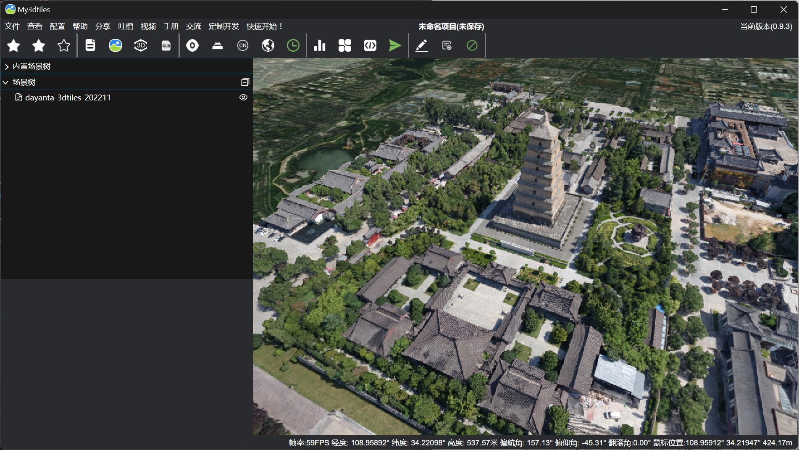
可以直接拖拽tileset.json，或者直接拖拽文件夹，就可以加载3dtiles数据。如果是在线数据，拷贝地址再粘贴，也可以直接加载3dtiles数据。 大文件已外迁网盘：演示视频 20240715-000000-加载3dtiles概述.mp4 体积超过 3MB，未随文档入库，请到百度网盘「My3dtiles资料附件」条目取回。
地形/影像
快速加载影像数据。除了可以 拷贝JSON加载影像 外，还可以直接 加载图形地图的lrc格式 。
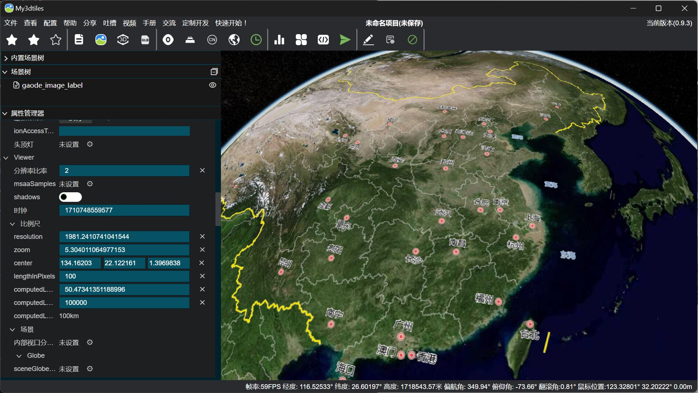
大文件已外迁网盘：演示视频 20240715-000000-加载地形影像.mp4 体积超过 3MB，未随文档入库，请到百度网盘「My3dtiles资料附件」条目取回。
geojson/kml/czml

大文件已外迁网盘：演示视频 20240715-000000-加载geojson演示.mp4 体积超过 3MB，未随文档入库，请到百度网盘「My3dtiles资料附件」条目取回。
数据浏览
交互漫游、第一人称、场景树控制
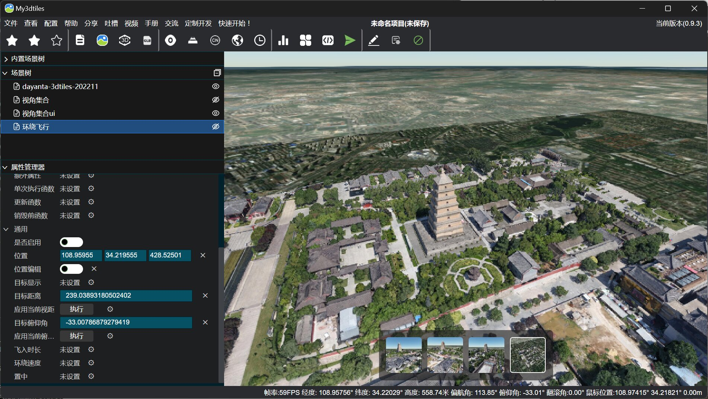
交互漫游
交互操作请参照以下表格： 大文件已外迁网盘：演示视频 20240715-000000-交互漫游.mp4 体积超过 3MB，未随文档入库，请到百度网盘「My3dtiles资料附件」条目取回。
第一人称漫游
第一人称漫游的默认按键如下。另外所有按键可以自定义！ 大文件已外迁网盘：演示视频 20240715-000000-第一人称漫游键盘操作.mp4 体积超过 3MB，未随文档入库，请到百度网盘「My3dtiles资料附件」条目取回。
场景树控制
大文件已外迁网盘：演示视频 20240715-000000-场景树控制.mp4 体积超过 3MB，未随文档入库，请到百度网盘「My3dtiles资料附件」条目取回。
数据调试
My3dtiles可以显示帧率、打开Cesium的3dtiles数据调试面板、打开Cesium的地形调试面板。

大文件已外迁网盘：演示视频 20240715-000000-数据调试.mp4 体积超过 3MB，未随文档入库，请到百度网盘「My3dtiles资料附件」条目取回。
m3t核心功能
m3t数字孪生场景搭建
基础数据(3dtiles/gltf/地形...)编辑
数据载入、压平、裁剪、着色等等
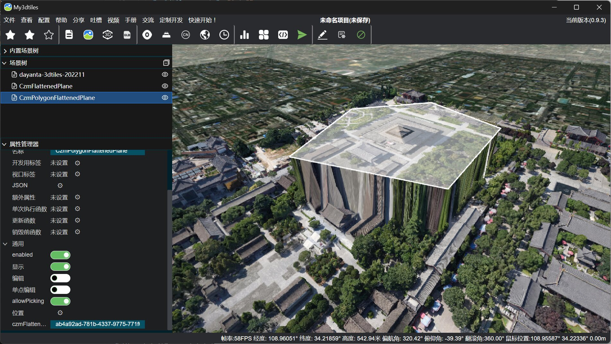
大文件已外迁网盘：演示视频 20240715-000000-3dtiles压平操作.mp4 体积超过 3MB，未随文档入库，请到百度网盘「My3dtiles资料附件」条目取回。
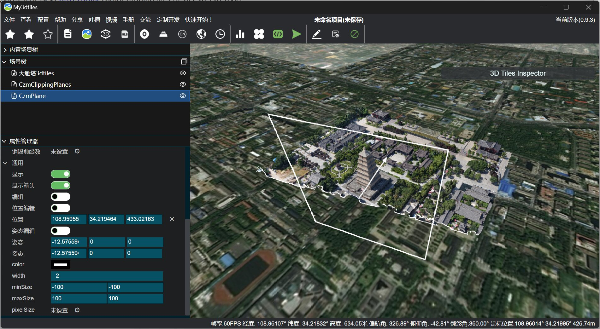
大文件已外迁网盘：演示视频 20240715-000000-3dtiles裁剪操作.mp4 体积超过 3MB，未随文档入库，请到百度网盘「My3dtiles资料附件」条目取回。
内置三维场景对象
基本图形(点线面)、标绘、POI(电子标牌)
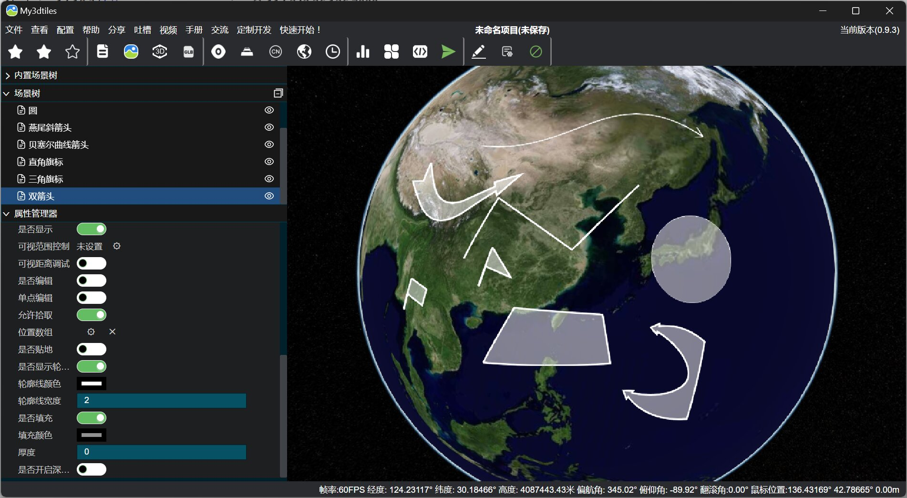
基本图形 大文件已外迁网盘：演示视频 20240715-000000-基本图形对象操作.mp4 体积超过 3MB，未随文档入库，请到百度网盘「My3dtiles资料附件」条目取回。 更多标绘 大文件已外迁网盘：演示视频 20240715-000000-标绘对象.mp4 体积超过 3MB，未随文档入库，请到百度网盘「My3dtiles资料附件」条目取回。 POI图标

大文件已外迁网盘：演示视频 20240715-000000-POI对象.mp4 体积超过 3MB，未随文档入库，请到百度网盘「My3dtiles资料附件」条目取回。
内置三维特效
三维特效(雨雪粒子)、 视频融合、自定义贴地图元 等等

大文件已外迁网盘：演示视频 20240715-000000-雨雪特效.mp4 体积超过 3MB，未随文档入库，请到百度网盘「My3dtiles资料附件」条目取回。
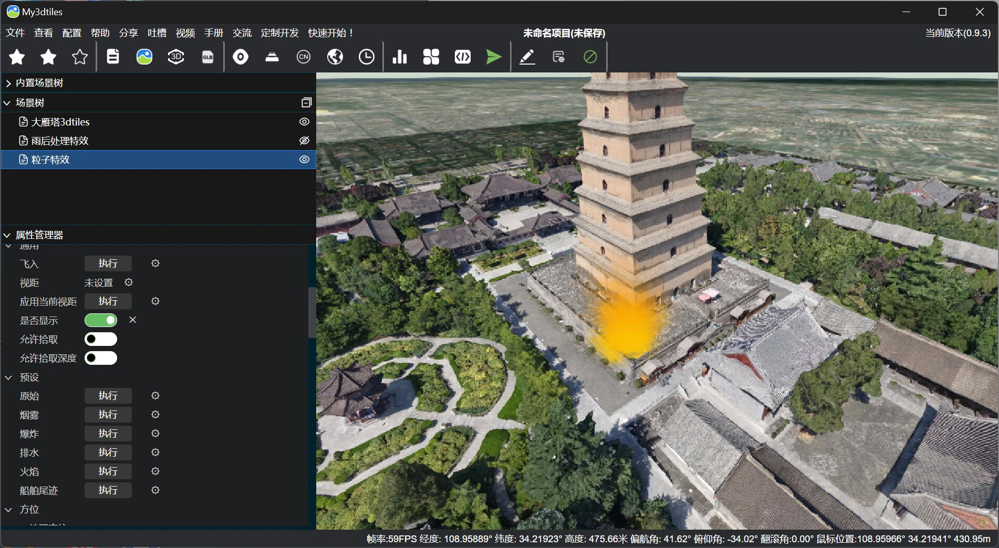
大文件已外迁网盘：演示视频 00000000-000000-三维特效对象.mp4 体积超过 3MB，未随文档入库，请到百度网盘「My3dtiles资料附件」条目取回。
内置测量分析功能
测量(位置、距离、面积、体积)、视域分析、坡向坡度分析、通视分析
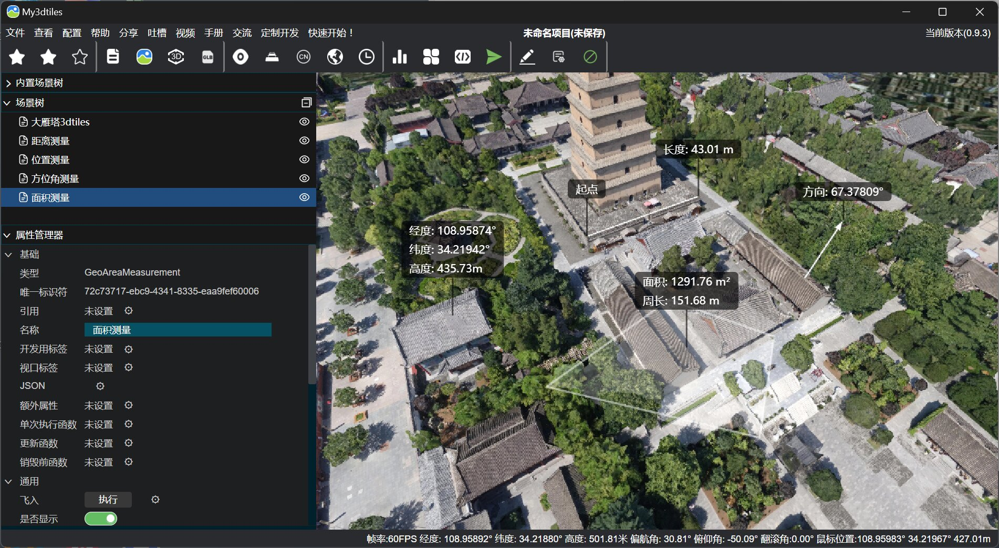
大文件已外迁网盘：演示视频 20240715-000000-测量分析功能.mp4 体积超过 3MB，未随文档入库，请到百度网盘「My3dtiles资料附件」条目取回。

大文件已外迁网盘：演示视频 20240715-000000-视域分析演示.mp4 体积超过 3MB，未随文档入库，请到百度网盘「My3dtiles资料附件」条目取回。
内置二维UI对象
基本按钮、ECharts图表控件、播放器面板
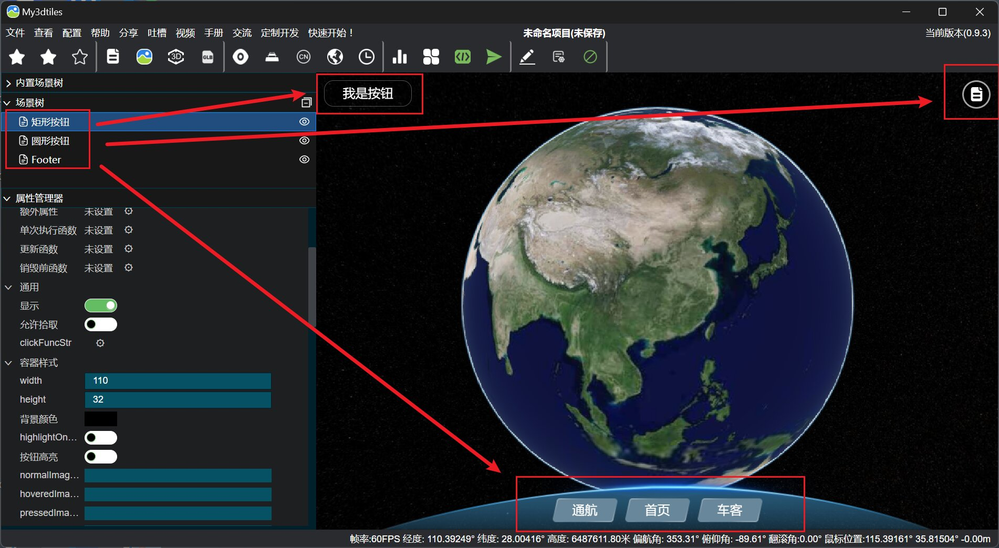
大文件已外迁网盘：演示视频 20240715-000000-UI基本按钮.mp4 体积超过 3MB，未随文档入库，请到百度网盘「My3dtiles资料附件」条目取回。 大文件已外迁网盘：演示视频 20240715-000000-footerUI按钮.mp4 体积超过 3MB，未随文档入库，请到百度网盘「My3dtiles资料附件」条目取回。
内置逻辑控制对象
路径、跟踪器、监视器、脚本加载、视角集合、环绕飞行
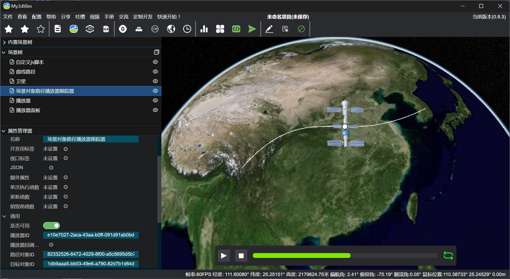
大文件已外迁网盘：演示视频 20240715-000000-逻辑控制对象介绍.mp4 体积超过 3MB，未随文档入库，请到百度网盘「My3dtiles资料附件」条目取回。 大文件已外迁网盘：演示视频 20240715-000000-逻辑控制对象演示2.mp4 体积超过 3MB，未随文档入库，请到百度网盘「My3dtiles资料附件」条目取回。 大文件已外迁网盘：演示视频 20240715-000000-逻辑控制对象演示3.mp4 体积超过 3MB，未随文档入库，请到百度网盘「My3dtiles资料附件」条目取回。 大文件已外迁网盘：演示视频 20240715-000000-逻辑控制对象.mp4 体积超过 3MB，未随文档入库，请到百度网盘「My3dtiles资料附件」条目取回。 大文件已外迁网盘：演示视频 20240715-000000-逻辑控制对象2.mp4 体积超过 3MB，未随文档入库，请到百度网盘「My3dtiles资料附件」条目取回。
m3t场景结构
场景
场景 = 场景对象 + 场景对象 + 场景对象

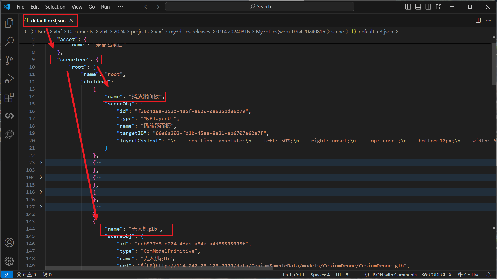
场景对象
场景对象 = 属性 + 属性 + 属性

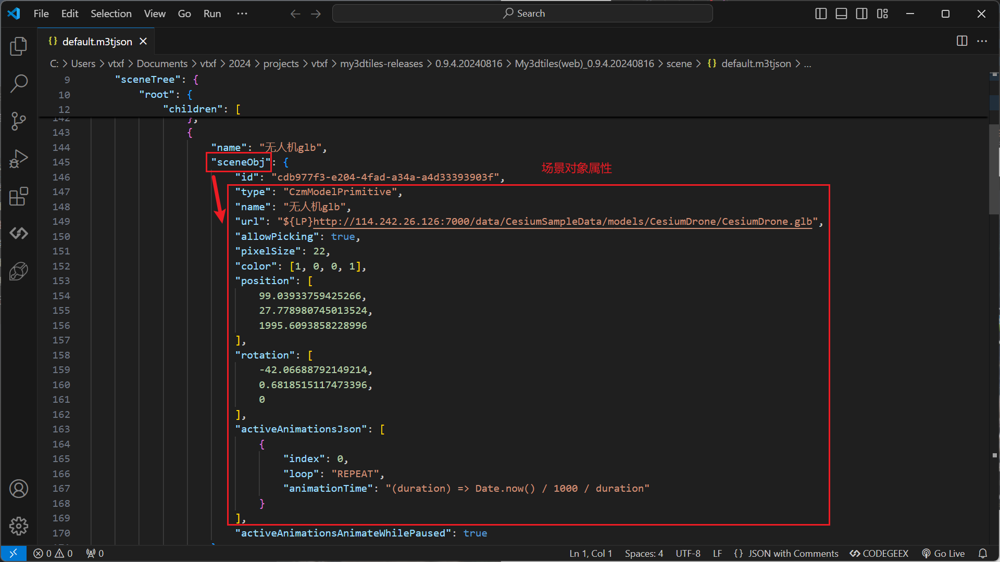
m3t场景对象特点
场景对象不只是可见的三维物体
可见的三维对象 - gltf模型
大文件已外迁网盘：演示视频 00000000-000000-gltf模型对象.mp4 体积超过 3MB，未随文档入库，请到百度网盘「My3dtiles资料附件」条目取回。
半可见的三维对象 - 路径
大文件已外迁网盘：演示视频 20240715-000000-路径对象.mp4 体积超过 3MB，未随文档入库，请到百度网盘「My3dtiles资料附件」条目取回。
不可见的逻辑对象 - 播放器
大文件已外迁网盘：演示视频 20240715-000000-播放器对象.mp4 体积超过 3MB，未随文档入库，请到百度网盘「My3dtiles资料附件」条目取回。 大文件已外迁网盘：演示视频 20240715-000000-播放器对象2.mp4 体积超过 3MB，未随文档入库，请到百度网盘「My3dtiles资料附件」条目取回。
可见的二维对象 - 播放器面板
大文件已外迁网盘：演示视频 00000000-000000-播放器面板对象.mp4 体积超过 3MB，未随文档入库，请到百度网盘「My3dtiles资料附件」条目取回。
m3t场景对象操控
UI面板操控 - 操控无人机颜色
大文件已外迁网盘：演示视频 00000000-000000-UI面板操控无人机颜色2.mp4 体积超过 3MB，未随文档入库，请到百度网盘「My3dtiles资料附件」条目取回。
场景对象JSON配置
大文件已外迁网盘：演示视频 20240715-000000-UI面板操控无人机颜色.mp4 体积超过 3MB，未随文档入库，请到百度网盘「My3dtiles资料附件」条目取回。
场景JSON配置
大文件已外迁网盘：演示视频 20240715-000000-场景JSON配置.mp4 体积超过 3MB，未随文档入库，请到百度网盘「My3dtiles资料附件」条目取回。
js代码控制无人机颜色
可以F12打开控制台程序，然后在这里写代码。lsso指当前选中的场景对象。 大文件已外迁网盘：演示视频 20240715-000000-js代码控制无人机颜色.mp4 体积超过 3MB，未随文档入库，请到百度网盘「My3dtiles资料附件」条目取回。
m3t场景文件的特点
m3tjson场景配置文件
场景配置文件 = 场景对象配置 + 内置场景对象配置
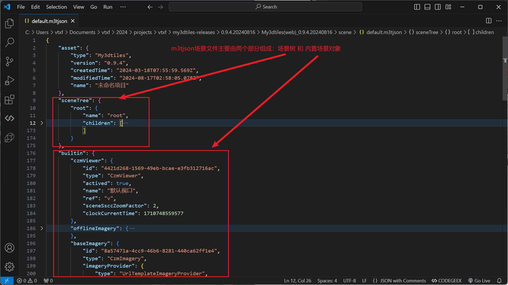
m3tojson 场景对象文件
m3tojson用来存储单个或者多个场景对象，不包含内置场景对象。


m3t场景对象更多操控
支持复制剪切粘贴
大文件已外迁网盘：演示视频 20240715-000000-场景对象复制剪切粘贴.mp4 体积超过 3MB，未随文档入库，请到百度网盘「My3dtiles资料附件」条目取回。
支持文件直接拖拽
大文件已外迁网盘：演示视频 20240715-000000-m3tojson文件拖拽.mp4 体积超过 3MB，未随文档入库，请到百度网盘「My3dtiles资料附件」条目取回。
场景对象JSON复制粘贴
大文件已外迁网盘：演示视频 20240715-000000-场景对象JSON复制粘贴.mp4 体积超过 3MB，未随文档入库，请到百度网盘「My3dtiles资料附件」条目取回。 大文件已外迁网盘：演示视频 20240715-000000-场景对象JSON复制粘贴2.mp4 体积超过 3MB，未随文档入库，请到百度网盘「My3dtiles资料附件」条目取回。
m3t应用场景
独立(主机)大屏展示
场景文件可以配置成全屏显示，保存后再次双击即可直接大屏展示。


大文件已外迁网盘：演示视频 20240715-000000-独立大屏展示.mp4 体积超过 3MB，未随文档入库，请到百度网盘「My3dtiles资料附件」条目取回。 全屏配置方法 大文件已外迁网盘：演示视频 20240715-000000-独立大屏展示2.mp4 体积超过 3MB，未随文档入库，请到百度网盘「My3dtiles资料附件」条目取回。
Web页面展示
独立页面展示
下载Web版zip包到服务器，然后配置好scene/default.m3tjson文件即可。
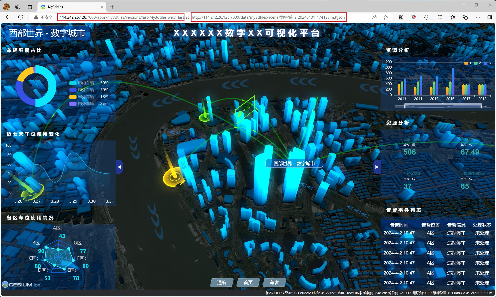
大文件已外迁网盘：演示视频 20240715-000000-web独立页面展示.mp4 体积超过 3MB，未随文档入库，请到百度网盘「My3dtiles资料附件」条目取回。
嵌入到业务系统中展示
可嵌入业务系统，两种模式：lib模式、iframe模式
大文件已外迁网盘：演示视频 20240715-000000-m3t配置web页面展示.mp4 体积超过 3MB，未随文档入库，请到百度网盘「My3dtiles资料附件」条目取回。
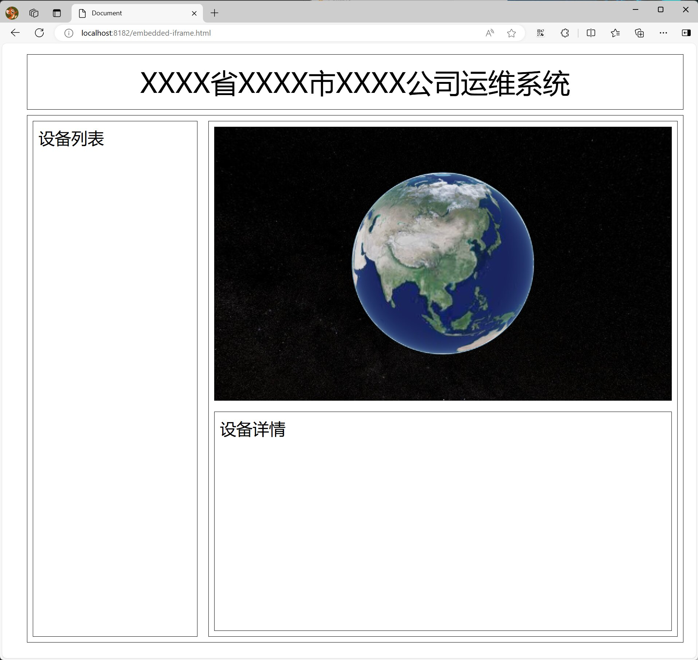
iframe模式和lib模式的区别

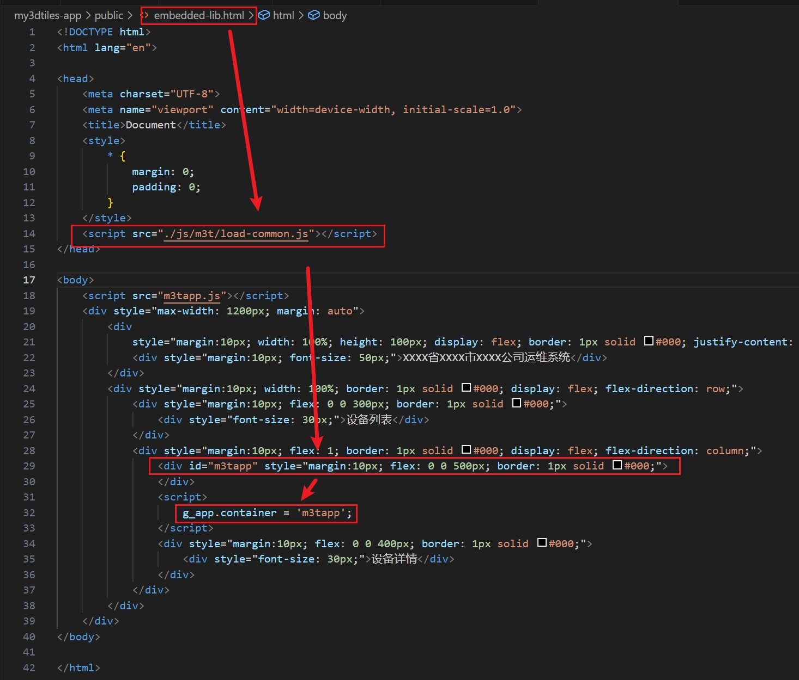
Web页面快速更新
本地编辑m3tjson场景文件，Web端快速展示场景。 示例视频：改无人机颜色、改无人机路径后可以快速更新到Web端，二者通过m3tjson来传输信息。 大文件已外迁网盘：演示视频 20240715-000000-web页面快速更新.mp4 体积超过 3MB，未随文档入库，请到百度网盘「My3dtiles资料附件」条目取回。
m3t产品特点
优势
简单、快速、稳定、独立、信创
简单
传统的数字孪生应用，例如UE，一般使用C++开发。C++开发难度高，技术人员即使达到这个门槛，开发效率也不高。使用Cesium开发，则只需要熟悉JS语言，需要懂得图形学的前端开发人员，门槛已降低很多，但是还是需要专业技术人员。而m3t的使用，只需要了解JSON配置，进行JSON配置即可，进一步降低开发人员的技术门槛。更进一步，对于m3t的一些简单使用，则只需要用户了解UI操作，可以达到所见所得的效果。普通用户即可操作，不需要技术人员。 从C++到JS，从JS到JSON，再从JSON到UI配置。极大地降低了用户的使用门槛！


快速
因为m3t可以进行所见所得式的UI配置，调整孪生场景的速度很快。m3t不论是在独立机器上部署，还是在web端部署，都相当容易，步骤简单。m3t应用的迭代速度可以很快。相比传统数字孪生应用，动不动编译一下就要好几个小时，m3t的迭代速度可以说提升了一个数量级。
稳定
传统的数字孪生应用，一般都有较为复杂的架构。例如UE的云渲染，不仅需要前端页面、还需要UE渲染后台，之间的通信异常复杂，各种配置参数令人望而生畏。这样的系统一般稳定性就会很差，时不时会出现宕机，或者不可用的情况。 著名军事评论家房兵经常说到：系统越复杂，稳定性就越差。 而m3t虽然包装成了一个桌面端应用，但内核是一个web端网页，在浏览器上即可运行。对于这样的纯web端应用，没有复杂架构，稳定性会好很多。
独立
用户使用数字孪生应用，经常会关心一个问题。就是是否会对厂家产生依赖。这里可以明确说明一下，用户不会对m3t的厂家产生任何依赖。主要原因有三：
- 数据独立。m3t使用开放的的标准化数据格式3dtiles/gltf/geojson等，而不是某种私有格式，不会出现一旦脱离厂家，原始数据就不能用的情况。
- 工具独立。m3t这个软件，本身是免费软件，没有任何授权，不需要USB加密狗，不需要联网登录。用户下载到电脑即可独立使用，离线机器亦可直接使用。
- 开发独立。如果用户在m3t做了开发，m3t软件基于cesium开发，但是并没有cesium封闭起来。用户仍然可以使用cesium继续独立开发。当然用户也可以使用m3t的架构开发m3t的插件。用户可以独立开发m3t插件，不需要向厂家缴纳任何授权费，而且自己开发的插件可以自行选择是否对外收费使用。
信创
使用C++开发的传统数字孪生应用，需要在不同的系统上编译不同的版本。因为CPU架构、显卡驱动等问题，不同的版本可能有不同的问题。而m3t属于js应用，不依赖具体的硬件，只依赖浏览器。只要在信创机器上能够安装上chrome或者firefox等开放式的浏览器，就能跑得起来。
目前的不足之处
三维渲染的真实感较差。如果对局部渲染性能较好的话，可以考虑M3T中融合WebGPU。可以参见这个示例： 嵌入内容
m3t合作模式
独立使用
用户可以独立使用m3t的大屏模式，或者web页面。
二次开发
如果用户需要在自己的业务系统中嵌入三维窗口，且需要比较多的交互操作。那么用户可以基于m3t进行一些js开发。它需要用户具备一定的js开发基础。因为m3t中的场景高度对象化，场景对象大多通过属性设置完成。
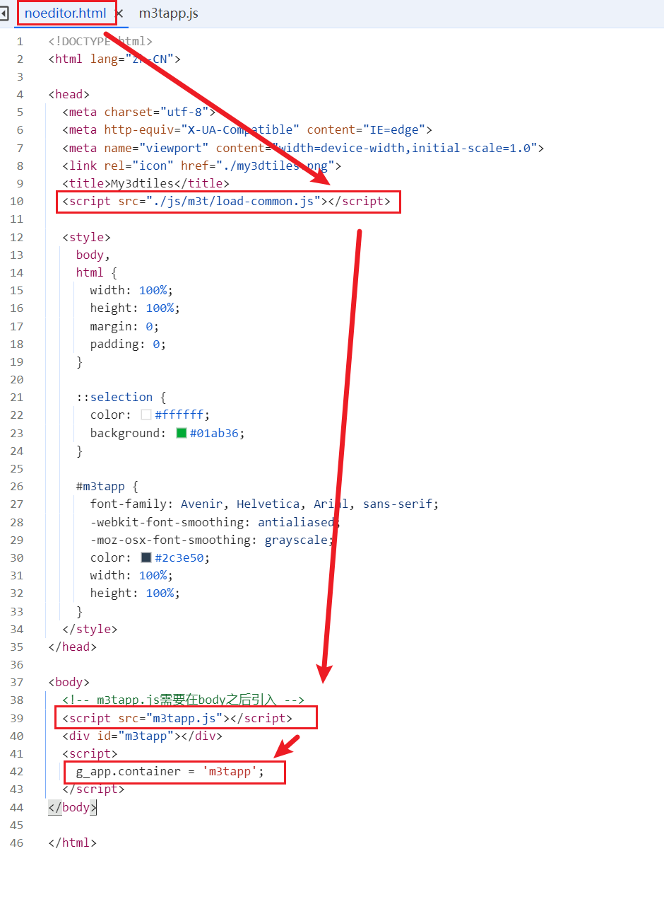
扩展插件
如果当前已有三维场景对象不能满足需求，需要扩展场景对象时。那么可能需要进行m3t插件的开发。m3t插件开发，相当于扩展更多的场景对象。这一部分工作可能需要用户有比较扎实的JS开发基础，能够理解m3t的软件架构。一般情况下，用户可以将这一部分工作交给厂家来做定制开发，也可以让厂家辅导，然后自己做二次开发。
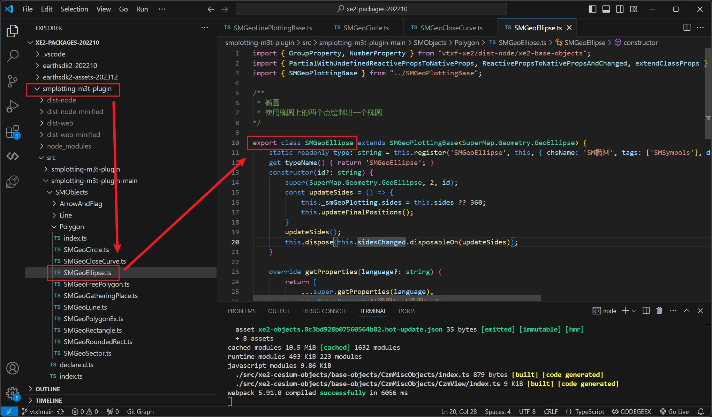
其他相关
m3t使用时，不可避免需要处理各种数据。如果遇到3dtiles/gltf数据不符合使用要求时，或者加载遇到问题时，也可以咨询厂家。遇到一些需要特殊处理的数据，也可以找厂家进行专门的定制开发。 更多功能请点击查看： 使用手册